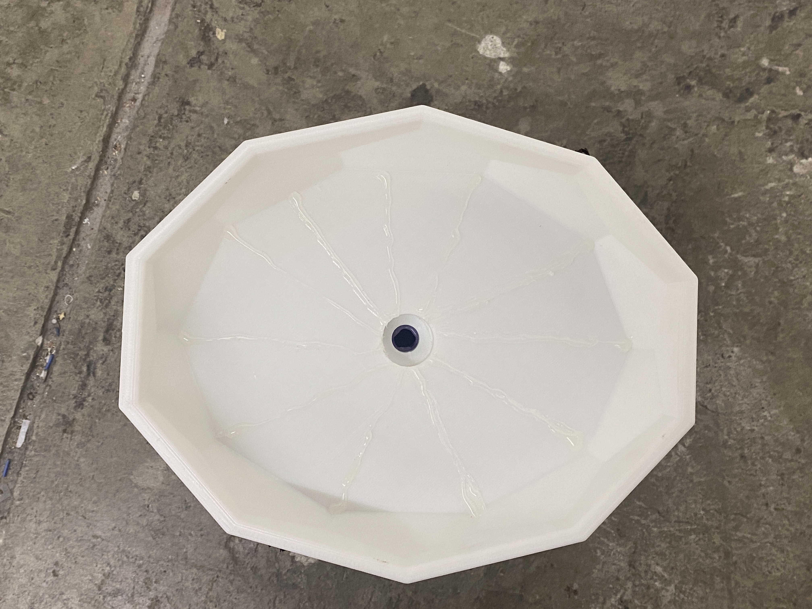
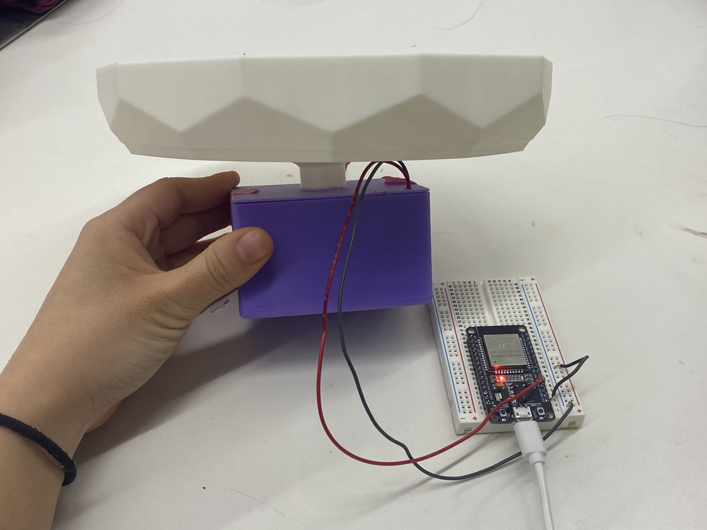
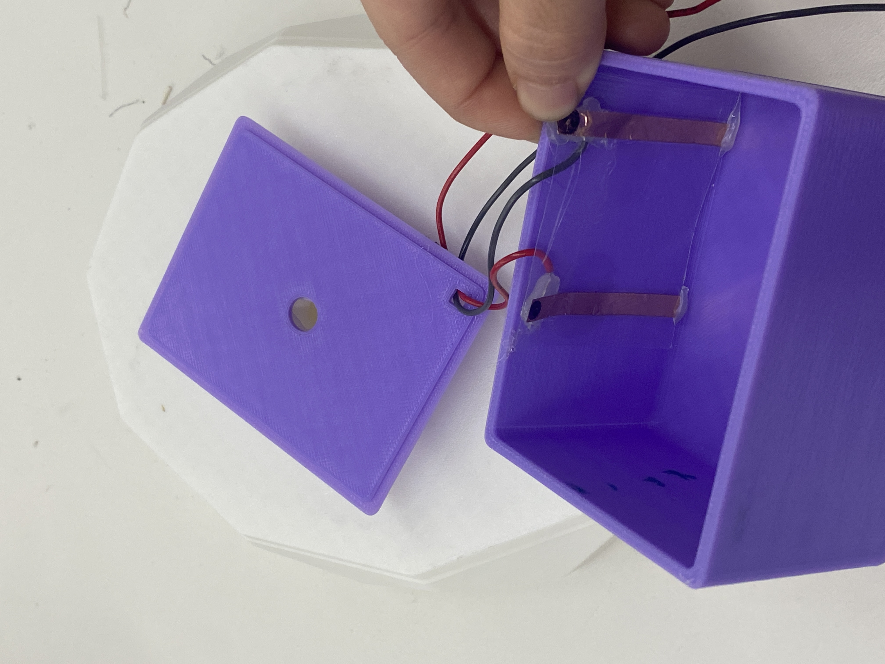
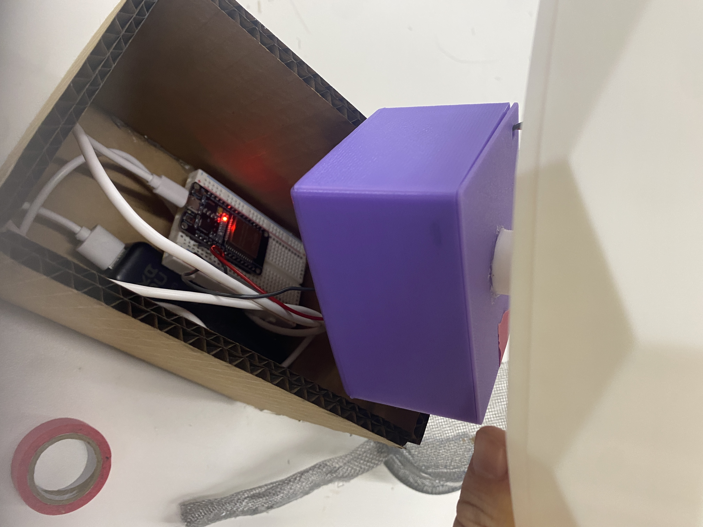
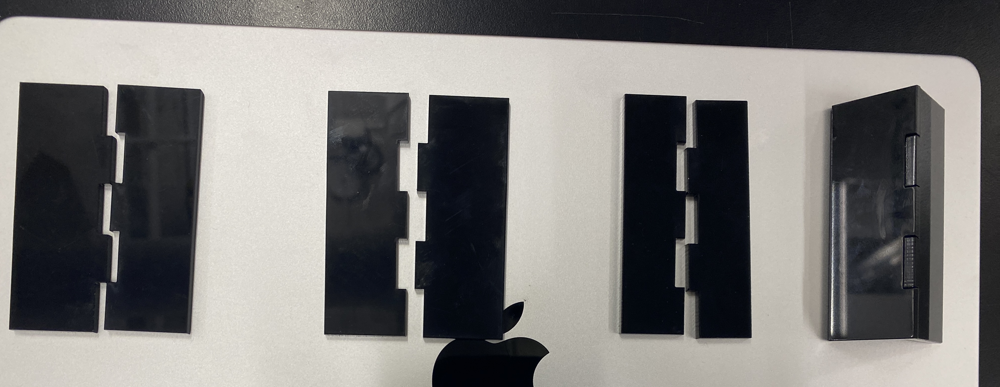

<div class="textcontainer">
<p class="margin"></p>
<h3>Final Project: Smart Water Harvester </h3>
<video src="./Demo_Video.mp4" style = "width: 65%" controls></video>
<h4>Background</h4>
<p>After MVP week (see Week 7 for MVP documentation and additional details), I was encouraged by feedback to focus on producing a fully encapsulated, self-contained
project—one that functioned reliably at a small scale rather than attempting a miniaturized version
of an oversized concept. My original proposal called for a modular fog-harvesting test platform
with interchangeable tiles. While exciting, it risked becoming too large to fabricate, store, or
evaluate meaningfully within the constraints of PS70.</p>
<p>So I redesigned the project around a new idea:
a sculptural garden ornament that harvests water from fog, collects it through a stylized flower made
of mesh “petals” and stores the water in a reservoir monitored by a capacitive water-level sensor.</p>
<p>This version keeps my core interest in material experimentation and biomimicry,
but wraps it in an approachable, poetic, garden-scaled object inspired partly by Gardenia’s
project and the kinetic flower sculpture I created earlier in the semester.</p>
<p>I began by making an inspirational mockup using GPT, visualizing how the fog-harvesting flower could
function both as a decorative object and as a small-scale atmospheric water collector.</p>
<h4>Designing the Flower</h4>
<img style = "width: 65%;" src="./ mesh_flower.JPG" alt="Mesh flower prototype">
<p>One of the first questions I tackled was what material would form the petals. I had originally
based my project around/hoped to experiment with 3D printing different materials, inspired by some research papers I'd read about
the development of new 3D printed fog harvesting materials with high-resolution biomimetic geometries—cactus-spine–like microstructures, beetle-back bumps, or fine hydrophilic/hydrophobic patterning.
However, after looking into it a bit more, I realized that many research prototypes relied on micro- or milli-scale features that channel droplets through anisotropic wetting.
However, the PS70 printers couldn’t produce the sub-millimeter detail needed for these effects to work reliably.
</p>
<p>
Instead, I pivoted toward using metal mesh, which the lab had in stock. Mesh naturally encourages
droplet nucleation at wire intersections, and its porosity allows airflow through the structure—
both desirable qualities for fog collection.
</p>
<p>I then followed these steps to fabricate my first flower prototype</p>
<p>- I sketched and cut several petal-shaped pieces out of the metal mesh.</p>
<p>- Because the mesh openings were relatively large, I layered two sheets for each petal to improve droplet formation and retention.</p>
<p>- Fog collectors often perform better when their surfaces are slightly curved, as curvature helps droplets coalesce and run downward. So I shaped each petal with different degrees of curvature to test this effect.</p>
<p>- Using epoxy resin, I attached three petals together at the base.</p>
<p>- I formed a stem from rolled plastic mesh and epoxied it to the petal cluster.</p>
<img style = "width: 65%;" src="./ mesh_flower.JPG" alt="Mesh flower prototype">
<p>Later, to improve the aesthetics and functionality of the flower, I added a few more metal mesh petals, cut some additional pastic petals to
add some color/curve variation, and shortened the stem to make it more compact.</p>
<h4>Collection Plate + Reservoir Box</h4>
<p>To actually collect and store the water the mesh flower accumulated, I added a collection plate and reservoir box beneath the flower.</p>
<p></p>
<p>For the collection plate, I 3D printed a cool geometric/shallow dish in PLA with a hole in its center to allow collected water to drain downward into the reservoir.
To guide droplets toward the center more reliably, I added thin hot-glue lines that act as simple hydrophilic channels—primitive but surprisingly effective at encouraging laminar flow.
</p>
<p>
The reservoir is a 3D-printed rectangular container designed to hold and measure the harvested water.
It includes a fitted lid, a circular inlet aligned precisely with the collection plate above, and a small
rectangular port for routing the capacitive sensor’s wiring. The structure is sturdy enough to withstand
repeated filling, draining, and handling during testing.
</p>
<p>To connect the collection plate to the reservoir, I designed and printed a custom funnel that mates cleanly with both openings.
This ensures that all harvested water flows directly into the reservoir, where it can be measured by the capacitive sensor without loss or leakage.</p>
</p>
<p></p>
<p>Together, these components form a simple but effective path:
Mesh Flower → Collection Plate → Funnel → Reservoir → Sensor → Cloud Alert</p>
<h4>Electronics (Water-Level Sensor, Networking)</h4>
<p>Earlier in the semester (Weeks 6–7), I experimented less successfully with several water-level sensing strategies. For the final project,
I created a much more stable capacitive sensor, inspired by tutorials using the ESP32’s built-in touchRead() pins.</p>
<iframe width="560" height="315" src="https://www.youtube.com/embed/40TjjWLljaU?si=hnxtLYW7zUmQotxY" title="YouTube video player" frameborder="0" allow="accelerometer; autoplay; clipboard-write; encrypted-media; gyroscope; picture-in-picture; web-share" referrerpolicy="strict-origin-when-cross-origin" allowfullscreen></iframe>
<p></p>
<p>Fabrication steps included:</p>
<p>
- Laminated two parallel strips of copper tape between thin plastic sheets to act as electrodes.
</p>
<p>
- Soldered wiring to each strip and wired it up to a breadboard andESP32 sensor.
</p>
<p>
- Superglued the sensor to the interior wall of the reservoir, with the electrodes fully submerged as water fills.
</p>
<p>
- Calibrated the sensor for different water levels using Arduino code, a serial monitor reading capacitance values, known water heights, and a linear approximation function.</li>
</p>
<p>
To make the project feel truly "smart," I programmed the ESP32 to send a Notifo (NTFY) alert whenever the water level exceeded 25 mm. See W9 documentation for more details.
</p>
<h4>Enclosures</h4>
<p>
To keep all electronics protected and reasonably weather-resistant, I designed a base enclosure
to sit at the bottom of the collection plate and house the reservoir box, ESP32, breadboard, wiring and sensors,
and a power bank. </p>
<p>
The first version was a cardboard mockup since I wasn't sure of the exact dimensions I wanted the box to be yet. It was functional but too tall.
</p>
<p></p>
<p>I then laser cut out another box using black acrylic. Before asembling all of the pieces, I first tested the kerf of the lazer cutter with a smaller square/smaller fingers to figure out the exact allowance i should take into account for a perfectly fitting box.</p>
<p></p>
<p>I also 3D-printed two small boxes/mounts for the water cups and fog misters to sit on a height relatively level to the flower so as to better simulate the passage of mist.</p>
<h4>Future Improvements</h4>
<p>
Several improvements are pending or under exploration:
1.Material exploration
The current mesh works decently, but droplet capture efficiency could be much better.
It'd be fun to test and compare:
finer plastic meshes,
nylon fabrics,
hydrophilic coatings (PVA, Plasti-Dip variants),
hydrophobic contrast strips (silicone spray),
3D-printed lattice structures with varying roughness.
2. Water Resistance and Electronic Component Minituarization
I'd like to miniaturize the ESP32 and other components to make the project more portable and self-contained. Particularly, potentially experimenting with a smaller coin battery to power the ESP 32 instead
of the current slightly clunky powerbank, and sodering the esp32/wires to a solderable/smaller breadboard to make it more compact.
This would free up additional space.
I also noticed after conducting afew repetitive tests that water seemed to be slightly seeping into the bottom/corners of the outer electronics box. In the first few trials, this problem ended up wrecking
one of my breadboards. Given smaller electronics,
it'd be great to make an even smaller container that contains just the electronic components inside the larger outer encloser to make it more water resistant.
</div>